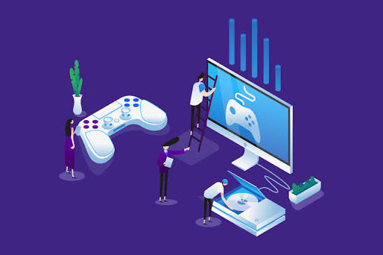

introductie:
Ik ben Milan de Jong, een leerling van de opleiding MBO 4 Software Development.
Ik ben 17 jaar oud en ik woon in Papendrecht.
Ik speel graag games en ik luister graag naar muziek.
Hobbies:
Mijn hobbies zijn gamen en muziek luisteren.
Ik speel ook soms voetbal met vrienden.
Mijn favouriete games zijn Hearts of Iron IV, Honkai: Star Rail, en Minecraft.
Ik heb persoonlijk geen favouriete muziek genre, want ik luister naar van alles.
Maar, ik heb wel een favouriete sub-genre, en die heet "Vocaloid."
Mijn favouriete lied heet "Unknown Mother Goose" bij Wowaka.
interesses:
Ik ben erg geïnteresseerd in game development en ik wil graag mijn eigen games maken.
Ik ben ook erg geïnteresseerd in web development en ik wil kijken of ik uiteindelijk mijn eigen websites kan maken.
doelen:
Mijn doelen zijn om minstens een werkende game of website te maken voor mijzelf of familie.
En ik hoop ook nog ergens bij een gamestudio te werken als dat mogelijk wordt in de aankomende jaren.
Projecten:
|No projecten gemaakt.|
